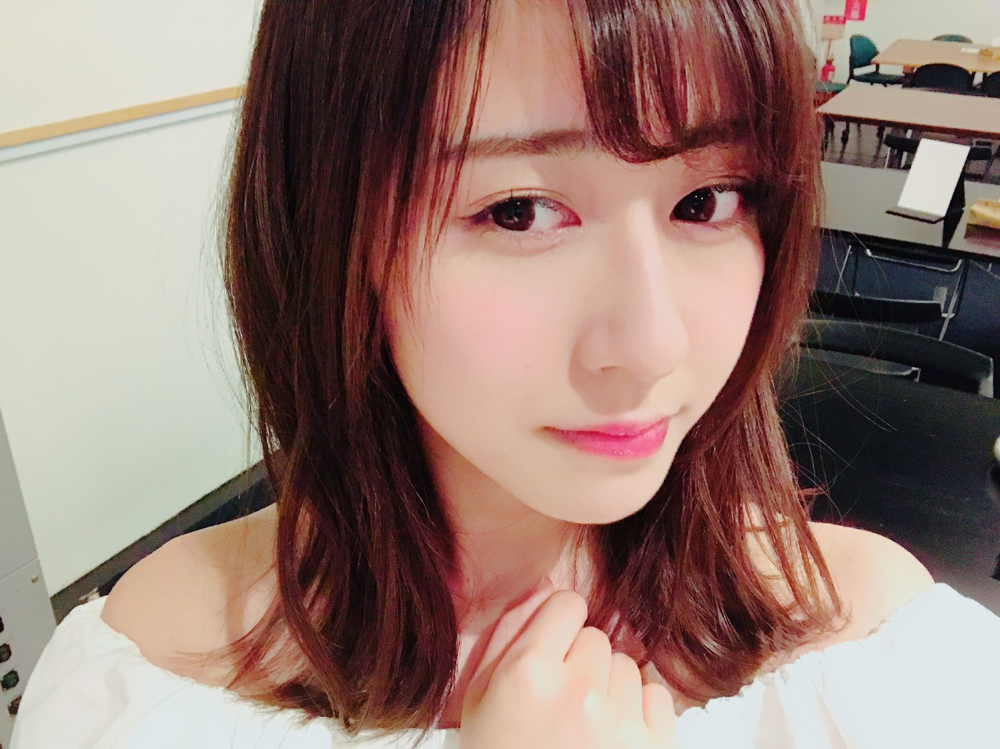
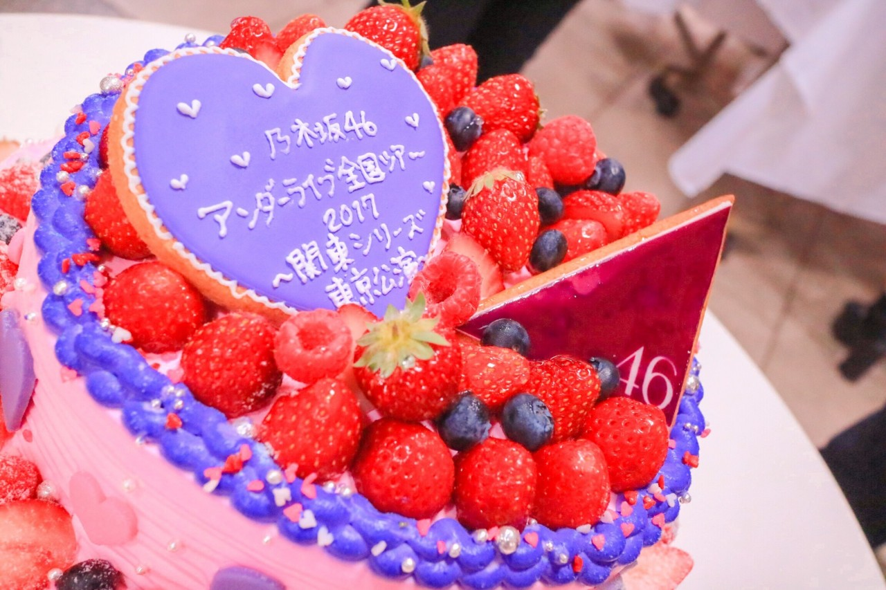
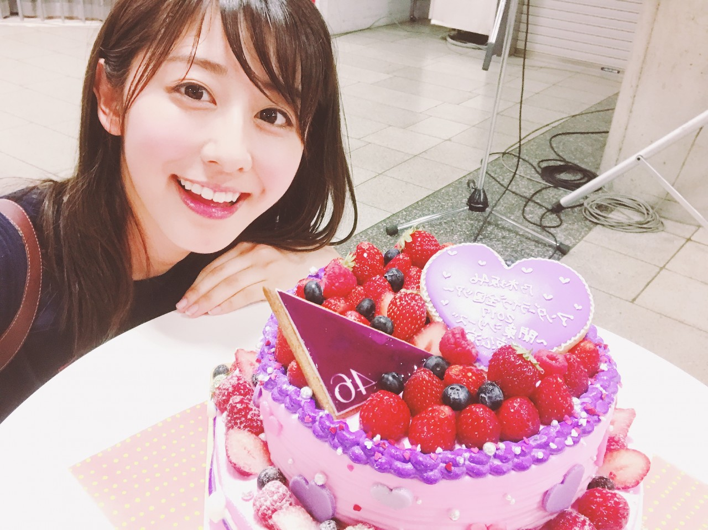

| 2017/04 27 Thu | 元気の源 |
ちはるーむへようこそ
今日のちはるーむでは鳴りそうなお腹の誤魔化し方を考えました。
今日は駅伝誕生日の日。
1917年のこの日(ちょうど100年前！)に
京都の三条大橋から上野の不忍池までの
508kmを走る東海道五十三次競争駅伝が行なわれたそうです。
駅伝は大好きなスポーツ！
特に年始の箱根駅伝は毎年毎年必ず見て応援しています
駅田がないと新年の始まりを感じないくらい笑

じっ
#chihashot
アンダーライブが終わった後に
お疲れ様！ということで
わざわざ用意してくださったケーキです

ピンクに、紫に、いちごに、ベリーに、
アイシングクッキーに、ハートモチーフ...
私の好みでしたヽ(；；)丿♡♡

とってもとっても可愛かった...
しかも見掛け倒しじゃなくて
味も物凄く美味しかった...

可愛いものは目の保養です
私の元気の源！
近頃はなかなかカメラを持って
お出掛けしたり写真を撮る機会がなかったのです
沢山写真撮りたいなあ
------------------------------------------------♡
♬ ChihaMusic
「こころにくだもの」米津玄師さん
思わず口ずさんでしまう、
キャッチーな曲だけども
とってもとっても優しい曲。
果物の名前が沢山出てくるのも
斬新だし可愛い。
"胸の奥 心の中にある
くだものが涙を吸い込み
少しずつ大きくなるんだ"
優しいなあ
涙を吸い込んでくれるくだもの
私の心にもあるのかな
明日発売の月刊エンタメさんの
別冊スペシャルブックに掲載しています！
周り選抜メンバーばっかりだけど
大丈夫なのかな...笑
私も楽しみにしています☺︎
嬉しい。
明日本屋さんに行かなきゃ！
おやすみ
斎藤ちはる
コメント(248)
2017/04/27 21:06